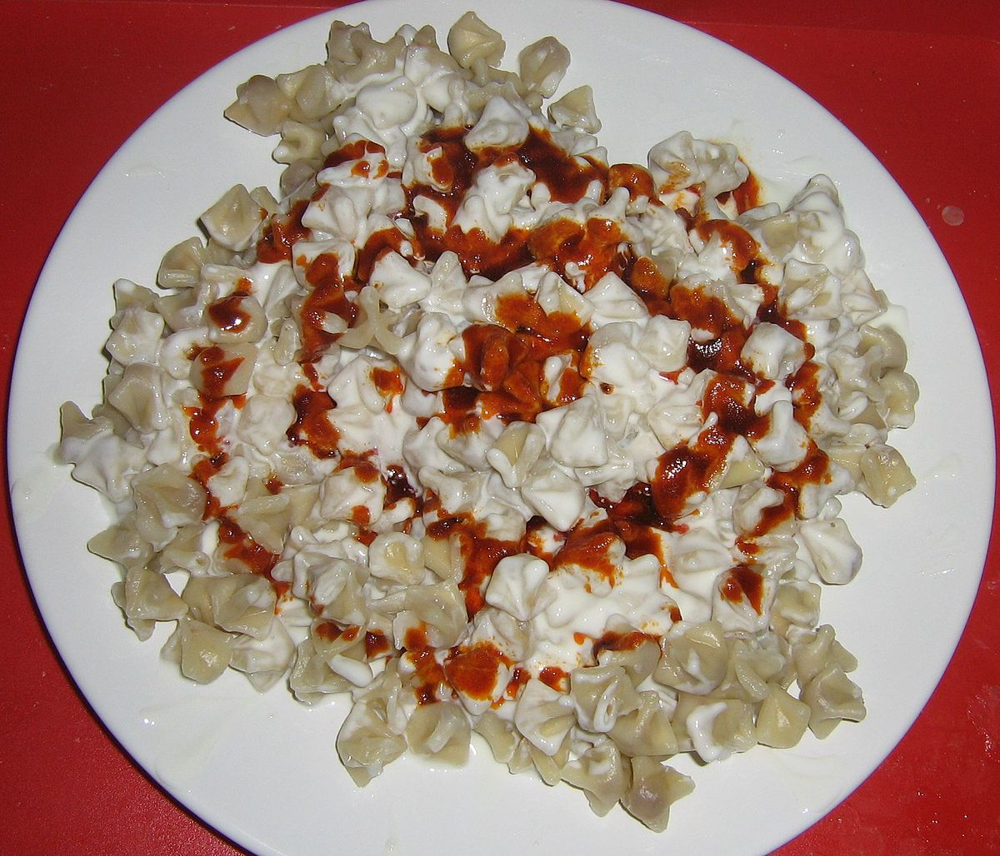

Manti

Description
This is a traditional Turkish pasta recipe that is mainly eaten in the winter.
I instantly fell in love with the warm savory flavors of this dish.
Ingredients
- 1 teaspoon salt
- 1 teaspoon dried mint
- 1 (9 ounce) package beef ravioli
- ¼ cup butter
- 1 teaspoon sweet paprika
- 1 tablespoon minced garlic
- 1 (8 ounce) container plain whole milk yogurt
How to make
- Bring a large pot of water to a boil. Add salt, mint, and ravioli. Cook for 3 to 5 minutes until ravioli float to the top, then drain and keep warm.
- Meanwhile, melt butter in a small saucepan over low heat. Stir in paprika, and keep warm as ravioli are cooking. Stir garlic into yogurt
- To serve, place drained ravioli onto a serving platter or individual plates. Spoon yogurt on top of ravioli, then ladle paprika butter over top.